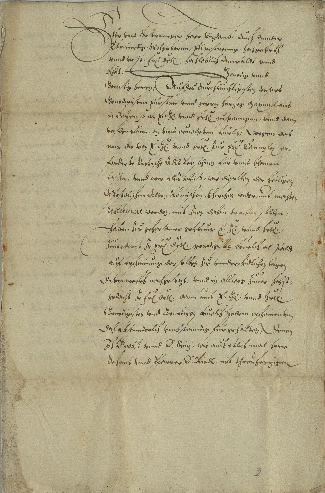

StA Landshut, Regierung Landshut, A 2894



Kommentar
Editor: magdalena.weileder@textgrid.de
Archiv: StA Landshut
Bestand: Regierung Landshut
Signatur: A 2894
Ort:
Datum: 1612 Mai 31/Juni 1
Schlagwort: Akt
Schwierigkeitsgrad: mittel
Kurzbetreff:
Bericht über die „Lutherischen von Adel“ im Rentamt Landshut
Bericht über die „Lutherischen von Adel“ im Rentamt Landshut
Schreiberhände:
- (S1)
Kommentar:
In einem Akt mit dem Betreff „Die Lutherischen von Adel im Rentamt Landshut“ ist dieser Bericht an Heinrich Hannibal von Muggenthal zu Pondorf und Breitenhill, Vizdom von Landshut, überliefert. Er stammt von vier Kommissaren, die hierfür bestellt worden waren, und enthält Aussagen einiger Adliger, die entgegen aller Bemühungen der Obrigkeit angeben, bei ihrem evangelischen Glauben bleiben zu wollen. Hier wird die erste Seite dieses Berichts gezeigt, auf den folgenden Seiten sind die Aussagen protokolliert.
Der Bericht ist ordentlich in Kurrent geschrieben und mit einzelnen ausladenden Zierstrichen versehen. Der Schreiber verwendet ein gammaförmiges g, zwei w-Formen (vgl. Z. 11: wir und wie), ein w-förmiges Kürzungszeichen (z.B. in Z. 3 über F(ü)r(stlich) und d(u)r(chlauch)t), Ligaturen für cz (auch als tz mit sehr kurzschäftigem t lesbar, vgl. Z. 17: nachgeseczt) und st bzw. sst. P wird auch im Wortinnern und in der sP-Ligatur in Form des Großbuchstabens geschrieben, Klein- und Großbuchstaben sind bei h und d, das in zwei Varianten vorkommt (vgl. Z. 20: doch, Z. 22: Dechant), nicht immer eindeutig voneinander zu unterscheiden. Das D für D(oktor) (Z. 21 und 22) ist in humanistischer Kursive geschrieben, ebenso das Fremdwort restituiert (Z. 13).
In einem Akt mit dem Betreff „Die Lutherischen von Adel im Rentamt Landshut“ ist dieser Bericht an Heinrich Hannibal von Muggenthal zu Pondorf und Breitenhill, Vizdom von Landshut, überliefert. Er stammt von vier Kommissaren, die hierfür bestellt worden waren, und enthält Aussagen einiger Adliger, die entgegen aller Bemühungen der Obrigkeit angeben, bei ihrem evangelischen Glauben bleiben zu wollen. Hier wird die erste Seite dieses Berichts gezeigt, auf den folgenden Seiten sind die Aussagen protokolliert.
Der Bericht ist ordentlich in Kurrent geschrieben und mit einzelnen ausladenden Zierstrichen versehen. Der Schreiber verwendet ein gammaförmiges g, zwei w-Formen (vgl. Z. 11: wir und wie), ein w-förmiges Kürzungszeichen (z.B. in Z. 3 über F(ü)r(stlich) und d(u)r(chlauch)t), Ligaturen für cz (auch als tz mit sehr kurzschäftigem t lesbar, vgl. Z. 17: nachgeseczt) und st bzw. sst. P wird auch im Wortinnern und in der sP-Ligatur in Form des Großbuchstabens geschrieben, Klein- und Großbuchstaben sind bei h und d, das in zwei Varianten vorkommt (vgl. Z. 20: doch, Z. 22: Dechant), nicht immer eindeutig voneinander zu unterscheiden. Das D für D(oktor) (Z. 21 und 22) ist in humanistischer Kursive geschrieben, ebenso das Fremdwort restituiert (Z. 13).
Entzifferung
(Absatz Beginn)
1 Edler vnnd Gestrennger Herr Viczdomb, Auch Annder
2 Ehrwürdig, Wolgebornn, Edlgestrenng, hochgelerth
3 vnnd vesst, F(ü)r(stlich) d(u)r(chlauch)t hochloblich Anwäldt vnnd
4 Rhät, Genedig vnnd
5 Gonnstig Herrn, Auf des Durchleuchtigisten vnsers
6 Genedigisten Fürsten vnnd herrn herczog Maximilians
7 in Baÿrn (et cetera) an E(ure) G(enaden) vnnd H(e)r(rschaf)t ausganngen, vnnd dann
8 von denselben, an vnns eruolgten beuelch, wegen das
9 wir die von E(urer) G(enaden) vnnd h(e)r(rschaf)t Zur F(ü)r(stlichen) Cannczlej er-
10 forderte Sectische Adls Persohnen für vnns khomen
11 lassen, vnnd wir alles vleiß, wie dieselben der heiligen
12 APostolischen Alten Römischen Khirchen widerumb möchten
13 restituiert werden, mit Jnen dahin trachten sollen,
14 Haben Zue gehorsamer gelebung E(urer) G(enaden) vnnd h(e)r(rschaf)t
15 Zuuorderist Jr F(ü)r(stlichen) d(u)r(chlauch)t genedigisten beuelch alsPaldta)
16 auf erscheinung derselben Zue vnnderschidlichen tägen
17 Disem werkh nachgeseczt, vnnd in allweg Zuuor hochst-
18 gedacht Jr F(ü)r(stliche) d(u)r(chlauch)t dann auch E(ure) G(enaden) vnnd h(e)r(rschaf)t
19 Genedigisten vnd Genedigen beuelch ÿedem erscheinentem
20 Doch absonnderlich vmbstenndig fürgehalten, Denen
21 Jch Brobst vnnd D(oktor) Seicz, wie auch etlich mal Herr
22 Dechant vnnd Pfarrer D(oktor) Riedl mit threuherczigen
23 [weiter auf der nächsten Seite: Geistlicher vermonung vnnd erJnnerung des wahren
24 Catholischen glaubens alles vleiß ZuegesProchen, ...]
(Absatz Ende)
a) im Vergleich mit "dt"(Textzitat) in Z. 3: "anwäldt"(Textzitat) scheint der nach "d"(Textzitat) in "alsPaldt"(Textzitat) folgende Schaft zwar zu kurz für ein "t"(Textzitat) zu sein, auf den folgenden Seiten finden sich jedoch viele Beispiele von "dt"(Textzitat)-Ligaturen mit eindeutig zu erkennendem kurzen" t"(Textzitat), auch beim Wort "baldt"(Textzitat)
Transkription
(Absatz Beginn)
1 Edler unnd gestrennger herr viczdomb, auch annder
2 ehrwürdig, wolgebornn, edlgestrenng, hochgelerth
3 unnd vesst, fürstlich durchlaucht, hochloblich anwäldt unnd
4 rhät, genedig unnd
5 gonnstig herrn! Auf des durchleuchtigisten, unsers
6 genedigisten fürsten unnd herrn, herczog Maximilians
7 in Baÿrn et cetera an eure genaden unnd herrschaft ausganngen unnd dann
8 von denselben an unns ervolgten bevelch, wegen das
9 wir die von eurer genaden unnd herrschaft zur fürstlichen cannczlej er-
10 forderte sectische adlspersohnen für unns khomen
11 lassen, unnd wir alles vleiß, wie dieselben der heiligen
12 apostolischen alten römischen khirchen widerumb möchten
13 restituiert werden, mit inen dahin trachten sollen,
14 haben zue gehorsamer gelebung eurer genaden unnd herrschaft
15 zuvorderist ir fürstlichen durchlaucht genedigisten bevelch alspaldta)
16 auf erscheinung derselben zue unnderschidlichen tägen
17 disem werkh nachgeseczt, unnd in allweg zuvor hochst-
18 gedacht ir fürstliche durchlaucht dann auch eure genaden unnd herrschaft
19 genedigisten und genedigen bevelch ÿedem erscheinentem
20 doch absonnderlich umbstenndig fürgehalten. Denen
21 ich brobst unnd D. Seicz, wie auch etlich mal herr
22 dechant unnd pfarrer D. Riedl mit threuherczigen
23 [weiter auf der nächsten Seite: geistlicher vermonung unnd erinnerung des wahren
24 catholischen glaubens alles vleiß zuegesprochen, ...]
(Absatz Ende)
a) im Vergleich mit "dt"(Textzitat) in Z. 3: "anwäldt"(Textzitat) scheint der nach "d"(Textzitat) in "alspaldt"(Textzitat) folgende Schaft zwar zu kurz für ein "t"(Textzitat) zu sein, auf den folgenden Seiten finden sich jedoch viele Beispiele von "dt"(Textzitat)-Ligaturen mit eindeutig zu erkennendem kurzen" t"(Textzitat), auch beim Wort "baldt"(Textzitat)